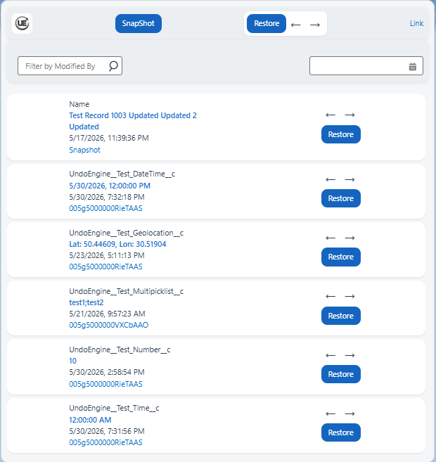
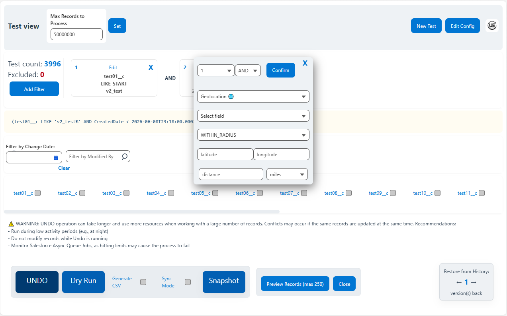
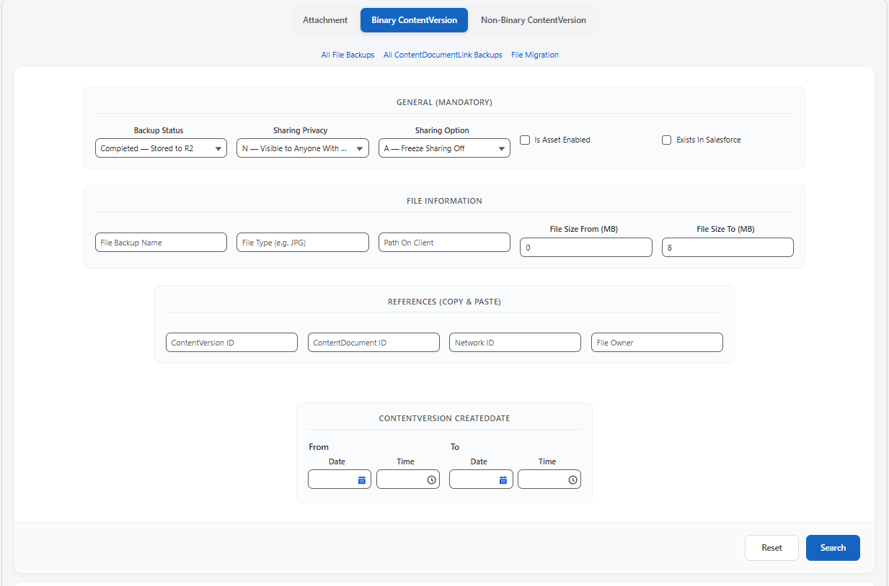

A flow, an import or an integration just changed the wrong data? UndoEngine keeps a native, field-level history of every record, so you can undo exactly what went wrong — one field, one record or thousands at once. No full restore, no lost valid changes.
Stop dreading mass updates. Roll back precisely, with a preview and an audit trail.
Ship flows, releases and data migrations with a safety net. If something misbehaves, undo what it touched.
Answer “who changed this, and what was it before?” in seconds and keep the pipeline trustworthy.
Native storage, optional encryption with your own keys and a full change history.
Data rarely breaks because of a catastrophe. It breaks quietly, a few thousand records at a time.
A CSV with a shifted column, a mapping error in an import, a mass edit on the wrong list view. The old values are gone and nobody has a copy.
A flow, trigger or scheduled job with a small logic mistake can overwrite thousands of records before anyone notices the pattern.
An ERP, marketing or enrichment sync pushes stale or wrong values over the data your team maintains. Finding what changed is the hard part.
A rep edits an amount, an owner or a stage, and nobody remembers the previous value. You need the answer now, not after an investigation.
Records deleted in bulk by a cleanup job or a hasty admin. UndoEngine can mass-restore deleted records from its logs.
Standard Field History tracks a limited number of fields per object and has no undo button. Reading history is one thing; acting on it is another.
An illustrative scenario: a flow update changes the stage and amount on a large batch of opportunities.
Set it up once. It works quietly until the day you need it.
Pick any standard or custom object and connect it in under 90 seconds with ready-to-use Flow templates. No Apex to write or maintain.
Every tracked field change is captured continuously in one compact ~2 KB log per record — not per change — natively inside Salesforce.
Filter by user and date, preview the timeline, and undo only the part that was wrong: a field, a set of fields, a record, or thousands of records at once.
One log per record, not per change, so storage stays predictable no matter how often records are updated.

Open any record and see exactly what changed, when, and by whom. Roll back a single field, a set of fields, or the entire record.

Fix a bad bulk update across thousands of records without hitting Salesforce list view limits. Filter the incident, review it, and restore it.

Back up attachments and ContentVersions to your own R2 storage, migrate existing files, and mass-restore deleted records from the Log Manager.
Sandboxes are free with full features. Use a partial or full copy sandbox to test on realistic data.
Request access and get the installation URL. Nothing is installed in production.
Connect Opportunity or any object you care about using the Flow templates.
Run a mass update on test records, then roll it back from the history viewer and mass restore screen.
Free
Install and test UndoEngine on any sandbox. Full feature access, no functionality limits.
Quote for your org
Request an offer and we will send you pricing for your Salesforce org. Full feature access, no functionality limits.
On request
Priority support, direct access to the development team, custom onboarding, influence on the product roadmap.
Submit the order form (“Get started!” button). We will contact you with a commercial offer for your org, and you can install UndoEngine on your sandboxes for free.
No. Objects are connected with ready-to-use Flow templates, in a few clicks and without code to write or maintain.
Any standard or custom object, and any editable field on it. History length, the number of tracked fields and other options are configured from the UI.
History for objects is stored natively inside your Salesforce org. Files are backed up to your own R2 storage, and the UI works with both.
Encryption is optional per configuration. You generate your own keys and can rotate them from the Data Security Manager.
UndoEngine is designed to respect Salesforce governor limits, with asynchronous processing and configurable batch sizes for large data volumes.
Yes. The Log Manager supports mass restore of deleted records, and files can be restored individually or in bulk.
Install on a sandbox today and see a rollback on your own data.